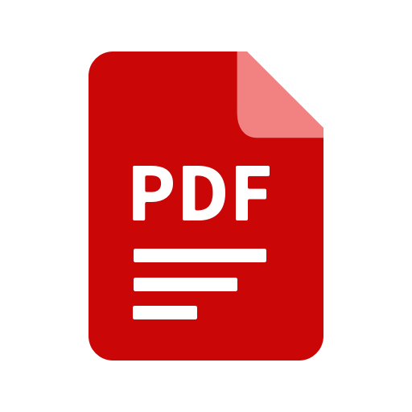
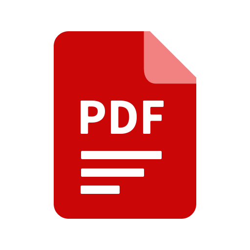
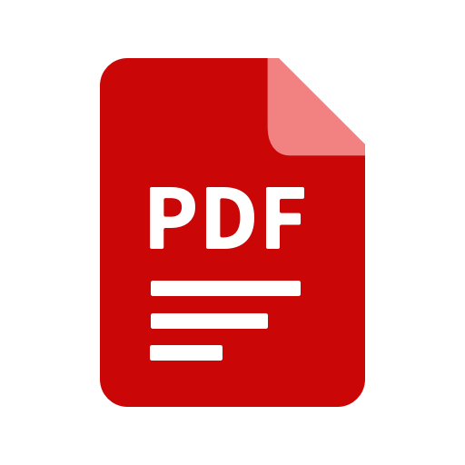

Quick Converter

Convert your Word Document to PDF, easily, instantly and happyly....
Steps to use the convertor:
Upload the file which you want.
Click on the Arrow
Once converted, you will receive a alert, click on the download button.
Yay!, your file has been successfully converted..
 Quick Converter
Quick Converter 
